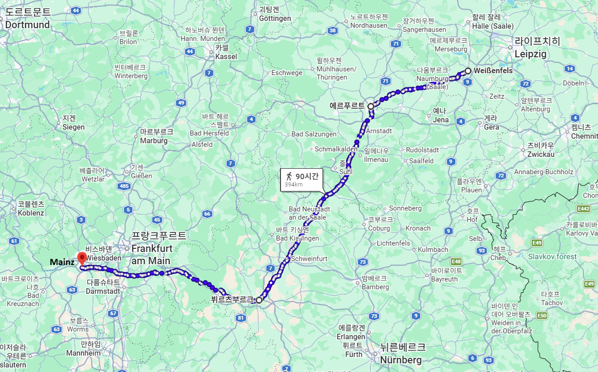
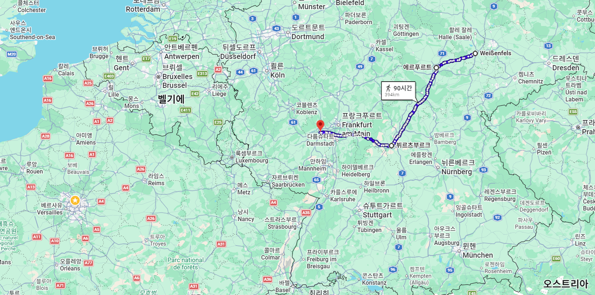
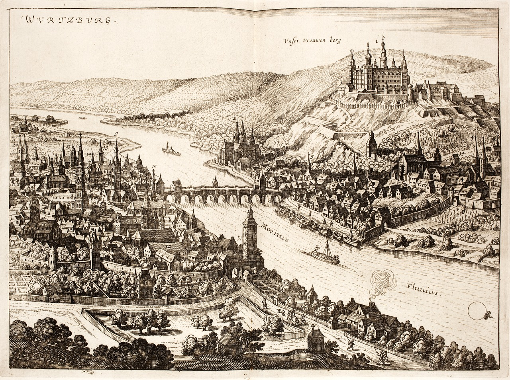
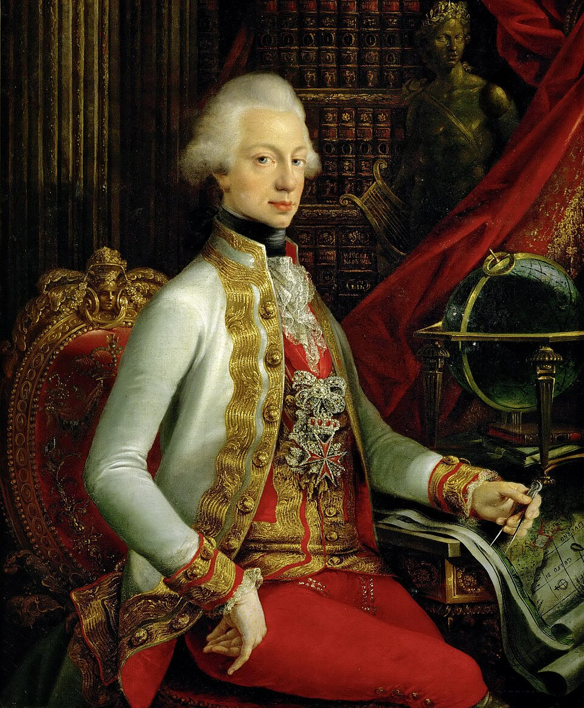
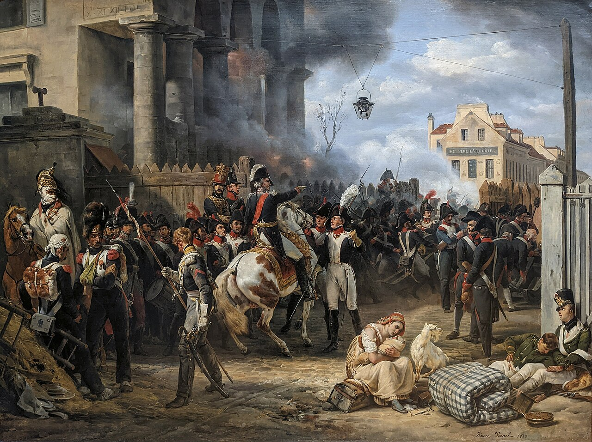
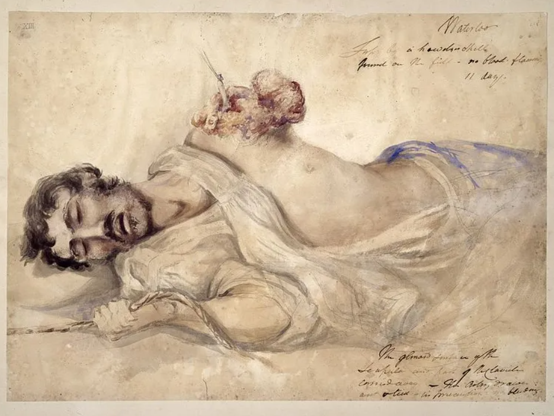

라이프치히 전투 (37) - 어두운 거리
게시: 2026-03-02T15:33:20+09:00
이렇게 그랑다르메의 퇴각 작전 세부안에 대해 명령서를 발부한 나폴레옹은 그 뒤에도 바빴습니다. 린더나우에서 귤라이의 포위망을 뚫고 바이센펠스 방면으로 미리 진출한 베르트랑 및 에르푸르트(Erfurt), 뷔르츠부르크(Würzburg) 등의 수비대 사령관에게도 명령서를 보내 식량 준비 등 추가적인 지시를 내렸습니다. 작전 명령서 내용이 식량 준비라니 약간 의아할 수 있으나, 러시아 원정 내내 식량 부족에 시달렸던 나폴레옹에겐 작은 문제가 아니었습니다. 실제로 라이프치히에서도 그랑다르메는 심각한 식량 부족에 시달리고 있었습니다. 나폴레옹이 묵었던 프로이센 호텔에서조차 나폴레옹의 시종들은 나폴레옹이 늦은 저녁으로 먹을 빵을 구하지 못해 발을 동동 구를 정도였습니다. 나폴레옹은 더 나아가 마인츠(Mainz)에 주둔하고 있던 켈레르만(François Christophe de Kellermann)애게도 병력 동원에 대해 명령서를 보냈습니다. 켈레르만에게 지시한 내용은 나폴레옹이 이 사태를 얼마나 현실적으로 바라보고 있었는지를 보여줍니다. 그 내용은 일종의 민방위대 같은 성격인 프랑스 국민방위군(Garde Nationale) 소집과 프랑스 본토 방어에 대한 것이었습니다.

(나폴레옹이 퇴각하는 그랑다르메를 위한 식량 준비를 지시한 도시들을 연결해보면 그가 의도한 퇴각로가 대충 그려집니다. 그의 퇴각로는 단순히 최단거리가 아니라, 평소 자신이 구축해놓았던 병참기지 등을 고려한 것이었습니다. 가령 에르푸르트는 당시 프랑스의 직할 도시였습니다.)

(지도를 확대해보면 결국 나폴레옹은 파리를 향해 똑바로 후퇴하고 있는 것을 보실 수 있습니다.)

(뷔르츠부르크는 전통적으로 신성로마제국 소속 주교가 다스리는 도시였는데, 1803년 잠깐 바이에른으로 귀속되었으나 1806년 다시 뷔르츠부르크 대공령(Grand Duchy of Würzburg, Großherzogtum Würzburg)이 된 상태로 1813년을 맞이했습니다. 이 그림은 1642년 그려진 것으로서, 저 강은 마인(Main) 강입니다.)

(당시 뷔르츠부르크가 대공령이었다면, 자연스럽게 1813년 당시 뷔르츠부르크 대공은 누구였는지 궁금합니다. 어이없게도 당시 대공은 오스트리아 황제 프란츠 1세의 친동생인 페르디난트 3세(Ferdinand III)였습니다. 원래 그는 토스카나 선제후였으나 나폴레옹에게 토스카나를 잃고 대신 잘츠부르크 선제후가 되었다가, 1805년 아우스테를리츠 전투에서 완패한 오스트리아가 신성로마제국을 해체하는 과정에서 다시 잘츠부르크를 잃고 그 대신 뷔르츠부르크를 받았습니다. 그러나 그건 결코 좋은 자리가 아니라서, 반강제로 뷔르츠부르크는 라인연방에 가입해야 했습니다. 나폴레옹 몰락 이후 그는 다시 토스카나 대공 자리를 되찾아 돌아갑니다. 이 그림은 1797년 아직 토스카나를 차지하고 있을 때의 모습입니다.)

(프랑스의 국민방위군(Garde Nationale)은 프로이센이나 오스트리아의 Landwehr(란트베어, 직역하면 국토 방위)에 해당하는 일종의 민방위대에 해당하는 조직입니다. 중산층의 중년 남성들로 구성되며, 원칙적으로는 유사시 자기가 사는 도시와 마을의 수비대 역할을 했습니다. 프로이센이 1813년 짧은 시간 내에 많은 병력을 동원할 수 있었던 것은 기존에 나폴레옹이 부과한 군비 제한에 맞선 꼼수로, 이런 국민방위군 조직을 200%로 활용한 덕분이었습니다. 이 그림은 1814년 3월의 파리 전투에 동원된 프랑스 국민방위군의 모습인데, 사실 군복이나 장비는 정규군과 큰 차이가 없습니다.) 나폴레옹의 서류 작업은 거기서 끝나는 것이 아니었습니다. 이제 꼼짝없이 연합군의 포위망에 갇이게 된 드레스덴의 생시르에게도 뭔가 지시를 내려야 했는데, 나폴레옹은 생시르에게 라이프치히 전투 상황을 간략히 알려주며 '상황을 봐서 제14군단을 이끌고 탈출하라'고 명령했습니다. 뿐만 아니라 이미 포위된 엘베 강변의 요새들, 가령 토르가우와 비텐베르크 등의 수비대에게도 '연합군과 적절히 협상한 뒤 요새를 내주고 퇴각하라'고 지시했습니다. 이제 나폴레옹에게는 독일의 거점을 확보하는 것이 중요한 것이 아니라, 단 한 명이라도 병력을 더 확보하는 것이 더 중요했던 것입니다. 즉, 이제 나폴레옹은 프랑스 본토 방위 준비에 들어갔습니다. 이렇게 서류 작업들을 끝내고 나니 이미 10월 19일 새벽 무렵이었고, 나폴레옹은 그제서야 겨우 두어 시간 쪽잠을 잘 수 있었습니다. 하지만 그랑다르메의 병사들은 전혀 쉴 틈이 없었습니다. 후퇴 그룹에 포함된 군단들은 모두 라이프치히 시내를 거쳐 밤샘 행군을 해야 했는데, 이들은 라이프치히의 내곽 성벽 안의 북쪽 동쪽 남쪽의 3개 성문을 통해 입성하여 모두 서쪽 성문인 란슈테트(Ranstädt) 성문을 통해 린더나우로 향했습니다. 들어오는 문은 3개인데 나가는 문은 하나이니 그 혼잡함은 불을 보듯 뻔했습니다. 나폴레옹이 이틀 전인 10월 17일 하루 종일 아무 것도 하지 않고 뭔가 고민한 것이 무색하게도, 그에 대해서는 아무런 대책이 준비되어 있지 않았습니다. 일부 부대들은 내성의 구시가지가 아니라 내성과 외성 사이의 교외 지대를 통과해 후퇴하도록 조치를 취했어야 할 것 같은데, 나폴레옹은 물론 그 휘하 참모진도 그런 배려는 전혀 해놓지 못했습니다. 캄캄한 한밤중에 좁은 구시가지를 통해 대군이 움직일 때는 횃불이라도 일정 간격으로 밝혀 놓아야 할 것 같은데, 그런 준비가 전혀 없었으므로 혼란은 더욱 가중되었습니다. 포가나 마차의 바퀴살이 부러지는 경우는 매우 흔한 일이었는데, 북새통을 이룬 좁고 캄캄한 길에서 그런 일이 벌어지니 수습이 쉽지 않았습니다. 이렇게 멈추다 가고 멈추다 가는 일이 자주 벌어지자 북-동-남쪽 성문을 통해 계속 쏟아져 들어오던 부대들이 뒤섞이며 더욱 큰 혼잡이 벌어졌습니다. 이 와중에 4~5천 명의 포로들까지 이 행렬에 끼어 행군했는데, 이들은 당연히 후퇴에 대한 의욕(?)이 없어 걸음도 느렸으므로 혼란은 가중되었습니다. 그런 와중에도 장교들과 부사관들이 병사들을 닥달하여 부서진 마차를 치우고 죽은 말을 치우면서 밤새도록 후퇴 행렬은 이어졌습니다. 결국 동이 틀 무렵에는 후퇴 명령을 받은 부대들 중 마지막 군단인 제5군단도 란슈테트 성문을 빠져나갈 수 있었습니다. 그런데 아직 시 외곽을 지키고 있는 후위대를 제외하고도, 이게 후퇴가 끝난 것이 아니었습니다. 동이 터오자, 라이프치히 시내의 주택들로부터 수천 명의 낙오병들이 슬금슬금 쏟아져 나오기 시작했습니다. 알고 보면 혼란 속의 밤샘 행군에 낙담하고 또 배가 고팠던 병사들 중 상당수가 부대에서 이탈하여 라이프치히 시민들의 주택으로 무단 침입하여 밤을 지낸 것이었습니다. 이들보다는 후퇴 작전에 피해를 덜 끼쳤지만, 라이프치히 시내에는 수천 명의 부상자들이 완전히 버려진 채 고통과 갈증, 배고픔에 신음하고 있었습니다.

(이 그림은 1815년 워털루 전투에서 부상병을 치료했던 스코틀랜드 의사인 찰스 벨(Charles Bell)이 그때의 기억을 살려 그린 것입니다. 아무리 애국심과 영광 등으로 치장을 하더라도, 언제나 전쟁은 끔찍한 것이고 수많은 비극을 낳습니다. 전쟁을 하자는 인간일 수록 무책임하고 부도덕한 인간일 가능성이 매우 높습니다.)
이런 대혼란 속에서 정작 이 도시의 군주인 작센 국왕 프리드리히 아우구스투스는 매우 난처한 입장이었습니다. 18일 저녁 늦게, 작센 사단 대부분이 전선에서 이탈하여 연합군 측에 합류해버렸다는 황당한 소식을 들고 제샤우 장군이 찾아왔던 것입니다. 작센군의 집단 투항에 대한 나폴레옹의 분노도 두려웠지만, 분명히 패색이 짙었던 나폴레옹과 앞날을 계속 함께 해야 하는지 판단하는 것도 무시무시한 일이었습니다. 여기서 까딱 판단을 잘못하면 자신의 왕관이 날아갈 판국이었던 것입니다. 이미 휘하 부대 모두가 투항해버린 상황에서, 뒤늦게 연합군 측에 넘어간다고 연합군이 자신의 왕관을 빼앗지 말라는 보장이 전혀 없었습니다. 그렇게 고민하고 있던 아우구스투스에게 저녁 8시 경 나폴레옹의 외무부 장관인 마레의 편지가 도착했습니다. 그 편지에서 마레는 그날 전투에서 나폴레옹이 승리했고 연합군은 다음날 철수할 것이지만 어쨌거나 보급 문제 때문에 그랑다르메는 서쪽으로 이동할 것이라는 눈 가리고 아웅식의 거짓말을 앞세운 뒤, 아우구스투스가 나폴레옹을 따라온다면 그의 안전과 왕위를 보장하겠다는 나폴레옹의 약속을 전달했습니다. 일설에는 마레가 직접 찾아와서 편지 내용과는 달리 '작센 국왕께서는 연합군에 투항하시는 것이 좋겠다'라고 조언했다고 합니다. 아우구스투스는 현명하게도 나폴레옹의 제안을 거절하고 아직 그에 대해 충성하는 작센군 1천여 명과 함께 그 자리에 남았습니다. 밤새도록 라이프치히 시내에서 이런 대소란이 벌어졌다면, 불과 몇 km 밖에 진을 치고 있던 연합군이 그걸 몰랐을 리가 없습니다. 그렇다면 연합군은 당연히 린더나우로 빠져나가려는 나폴레옹의 퇴로를 차단하려는 노력을 하지 않았을까요? Source : The Life of Napoleon Bonaparte, by William Milligan Sloane Napoleon and the Struggle for Germany, by Leggiere, Michael V With Napoleon's Guns by Colonel Jean-Nicolas-Auguste Noël https://www.britannica.com/event/Napoleonic-Wars/Dispositions-for-the-autumn-campaign http://www.historyofwar.org/articles/campaign_leipzig.html https://warhistory.org/@msw/article/leipzig-battle-of-the-nations https://www.encyclopedia.com/history/encyclopedias-almanacs-transcripts-and-maps/leipzig-battle-0 https://warfarehistorynetwork.com/article/death-knell-for-napoleons-empire/ https://www.napoleon-series.org/military-info/battles/leipzig/c_leipzigoob10.html https://en.wikipedia.org/wiki/National_Guard_(France) https://en.wikipedia.org/wiki/W%C3%BCrzburg https://en.wikipedia.org/wiki/Ferdinand_III,_Grand_Duke_of_Tuscany https://militaryhistorynow.com/2017/03/10/a-study-in-human-suffering-how-one-army-surgeon-captured-the-painful-aftermath-of-waterloo/